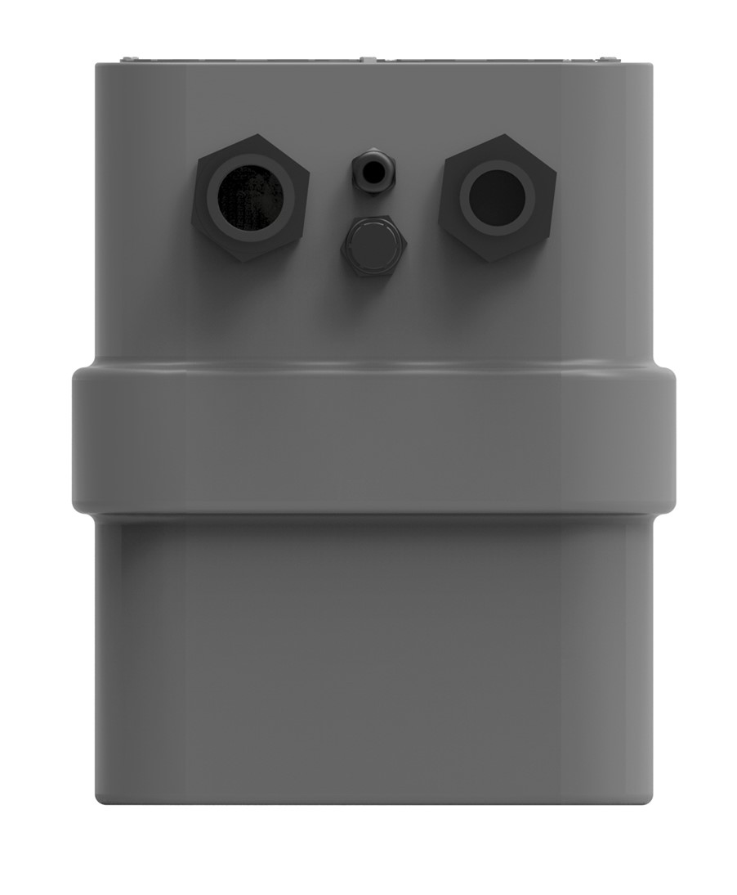

Kwikflo / Undersink Pump Stations
KUSP40
40 litre polyethylene packaged pump station
The Kwikflo KUSP40 is an undersink packaged pump station fitted with a submersible vortex pump, internal pipework and valves. It comes with an SAR40 pump installed, has a maximum head from all causes of 7 metres and requires venting.
- 40 LTank capacity
- 7 mMaximum head
- SAR40Installed pump
Product details
Specifications
| Model | Kwikflo KUSP40 |
|---|---|
| Type | Undersink packaged pump station |
| Tank | 40 litre polyethylene tank |
| Pump | SAR40 submersible vortex pump, installed |
| Maximum head | 7 metres from all causes |
| Venting | Required |
| Liquids handled | Trade waste, effluent and stormwater, sink waste and grey water |
What is supplied
Construction
The polyethylene tank comes with an SAR40 pump and in-tank fittings installed. The plumber installs the connections at the end of the tank.
- Polyethylene tank
- Submersible vortex pump installed
- Internal pipework and valves
- PVC ball and non-return valves
- Barrel unions
- PVC interconnecting pipework
Typical settings
Applications
- Cafes & kitchens
- Hobby rooms
- Dental surgeries
- Laboratories
See it in practice
Related projects

Technical information
Downloads
KUSP40 Product Brochure
Open the current Aline Pumps product brochure.
Talk to our team
Need help specifying the KUSP40?
Send your application requirements to Aline Pumps or call 1800 018 999.